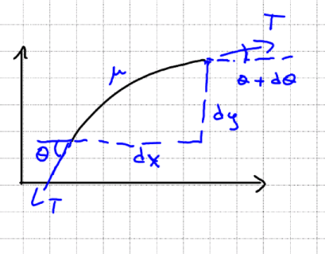

One Dimensional Wave Equation
As part of my Uni courses, I want to write down the basic derivation of the one-dimensional wave equation on a rope, just as an exercise for myself :)
Let’s imagine that we have a vibrating rope, and we chunk out a small fragment of it.
If we draw the diagram of forces we’ll get:

Where $\mu = dm/dl \approxeq dm/dx$ is the density, and $T$ is the tension on the rope.
Using Newton’s second law, for $x$: $$ \mu dx\frac{d^2x}{dt^2} = T\sin{\left(\theta + d\theta\right)} - T\sin{\theta} $$
Now, for very small values of $d\theta\lt\lt\theta$, we can use Taylor’s approximation around $d\theta = 0$: $$ \sin{\left(\theta + d\theta\right)} \approxeq \sin{\theta} + \frac{d}{d\theta}\left[\sin{\left(\theta + d\theta\right)}\right]_{d\theta=0}d\theta + O(d\theta^2) = \sin{\theta} + \cos{\theta}d\theta + O(d\theta^2) $$
Substituting back, we get: $$ \mu dx\frac{d^2x}{dt^2} = T\sin{\theta} + T\cos{\theta}d\theta - T\sin{\theta} = T\cos{\theta}d\theta $$
Rearranging a bit: $$ \frac{d^2x}{dt^2} = \frac{T}{\mu}\cos{\theta}\frac{d\theta}{dx} $$
For small $\theta$ approximation, we have $\cos{\theta} \approxeq 1$: $$ \frac{d^2x}{dt^2} = \frac{T}{\mu}\frac{d\theta}{dx} $$
This is nice, but there’s three variables here, let’s try to get rid of $\theta$. With a bit of trigonometry, we can see that: $$ \tan{d\theta} = \frac{dy}{dx} $$ And again, doing Taylor approximation around $d\theta=0$, we get: $$ \tan{d\theta} = \frac{dy}{dx} \approxeq d\theta $$
Deriving with respect $x$ both sides: $$ \frac{d^2y}{dx^2} = \frac{d\theta}{dx} $$
And plugging this back to the equation from before, we end up with: $$ \frac{d^2x}{dt^2} = \frac{T}{\mu}\frac{d^2y}{dx} \equiv \frac{1}{c^2}\frac{d^2y}{dx} $$
And this is our wave equation! \o/, where it’s usually defined $c \equiv \sqrt{\frac{\mu}{T}}$ as the propagation velocity.